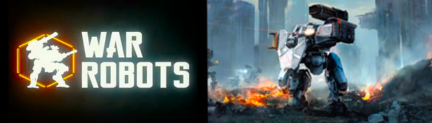
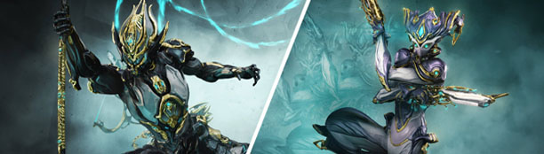
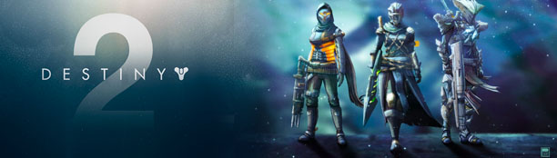

Октябрь 14
2022 г.

Игра, разработанная и изданная на тот момент российской компанией
Pixonic для мобильных устройств на платформах iOS, Android и
Microsoft Windows. Распространяется по модели Freemium. Это
многопользовательский симулятор боевого меха с PvP-боями в режиме
реального времени. Игроку предоставляется возможность стать
пилотом огромного боевого робота и обрушить всю мощь управляемой
им боевой машины на неприятеля. Игра представляет собой мобильную
версию сессионного MMO-шутера от третьего лица. В War Robots есть
возможность игры как в одиночку, так и в составе взвода. Бои
происходят в командах «шесть на шесть», недостающие игроки
добавляются в команду автоматически на основе специальной системы
матчмейкинга (подбора игроков). По стилю WR напоминает Mechwarrior
Online. На поле боя встречаются две команды, и для победы
необходимо либо удерживать как можно большее количество маяков,
либо полностью уничтожить отряд соперника.
Ноябрь 02
2022 г.

Warframe - компьютерная онлайн-игра в жанрах Action/RPG и шутера
от третьего лица, разработанная и выпущенная канадской студией
Digital Extremes для платформ Microsoft Windows, PlayStation 4 и
Xbox One. Разработкой версии игры для Nintendo Switch занимается
компания Panic Button. Действие Warframe происходит в вымышленной
научно-фантастической вселенной, в которой несколько сторон
соперничают за власть над Солнечной системой. Игроки принимают на
себя роли Тэнно — древних воинов, использующих в сражениях
дистанционно управляемые тела «варфреймы» с разнообразным оружием
и способностями. Геймплей Warframe сочетает в себе бои со
стрельбой и использованием холодного оружия, паркур и также
включает в себя элементы компьютерных ролевых игр — игрок
постоянно улучшает снаряжение своего персонажа. Warframe
распространяется по модели free-to-play и поддерживается за счёт
микроплатежей — игроки могут за реальные деньги приобрести в
игровом магазине внутриигровые предметы.
Декабрь 19
2022 г.

Destiny 2 продолжает сюжет Destiny и её дополнений. Действие игры
разворачивается в научно-фэнтезийном мире, охватывающем ряд планет
Солнечной системы. Игрок берёт на себя роль Стража — защитника
последнего безопасного города Земли. По сюжету игры, Стражи
обладают сверхъестественной силой под названием Свет, которая
помогает им защищать город от вторжений агрессивных инопланетян.
Destiny 2, будучи шутером от первого лица, предлагает игрокам
обширные и общие для многих игроков уровни. Различные доступные в
игре занятия включают в себя как PvE-контент, — например,
исследование мира с поиском спрятанных секретов, уничтожение
сильных и опасных противников-«боссов» или платформерные миссии,
требующие прыжков через пропасти — так и PvP-контент с сражениями
игроков на аренах. Как и ранее с Destiny, после выхода Bungie
поддерживала игру с помощью дополнений, добавляющих в игру новый
контент и миссии.